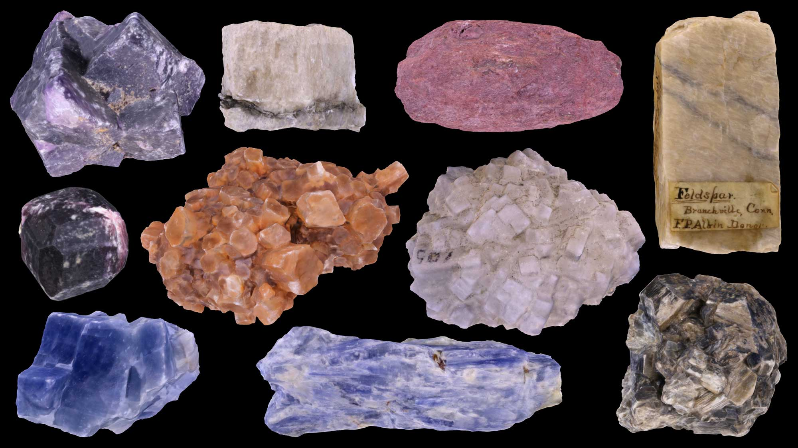
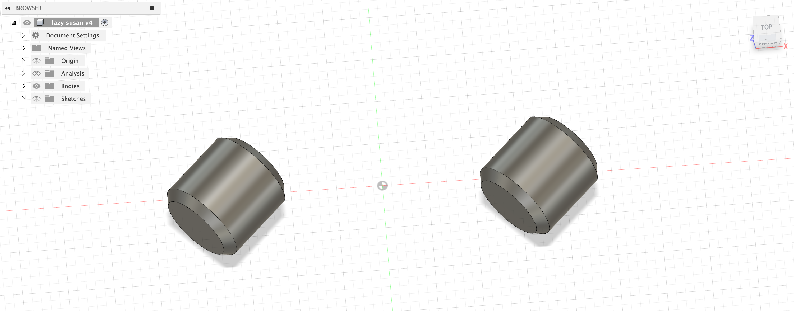
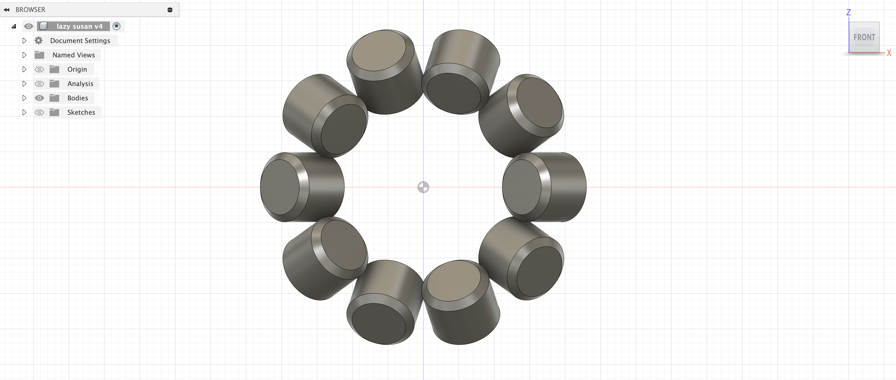
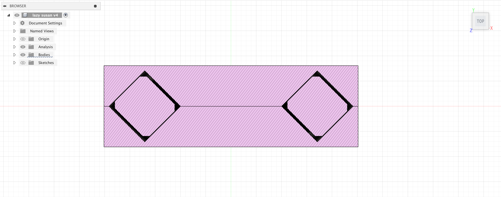
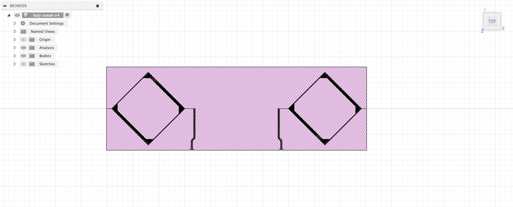
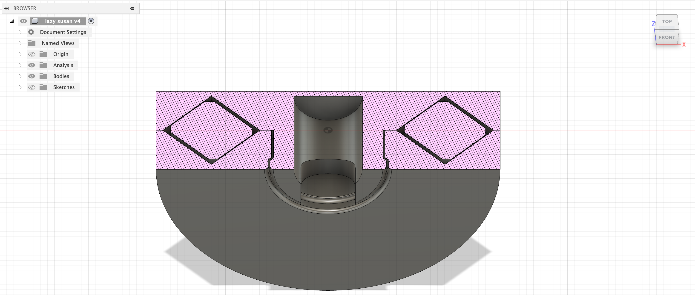
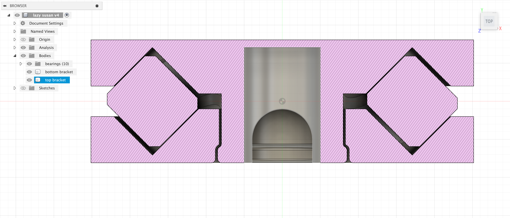
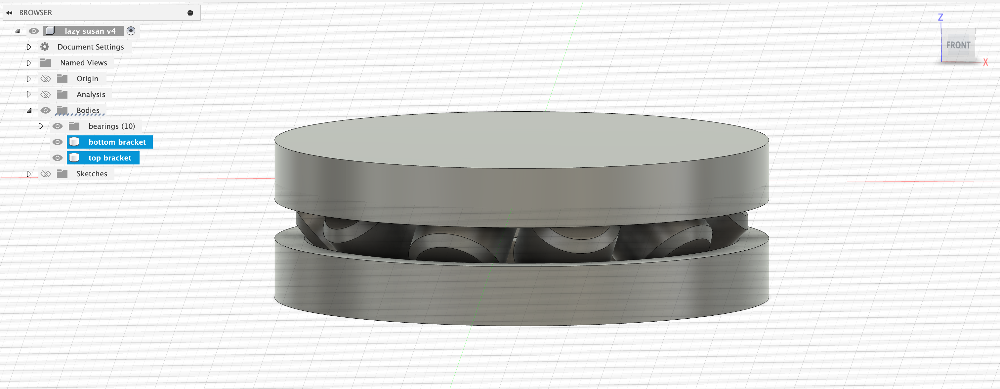
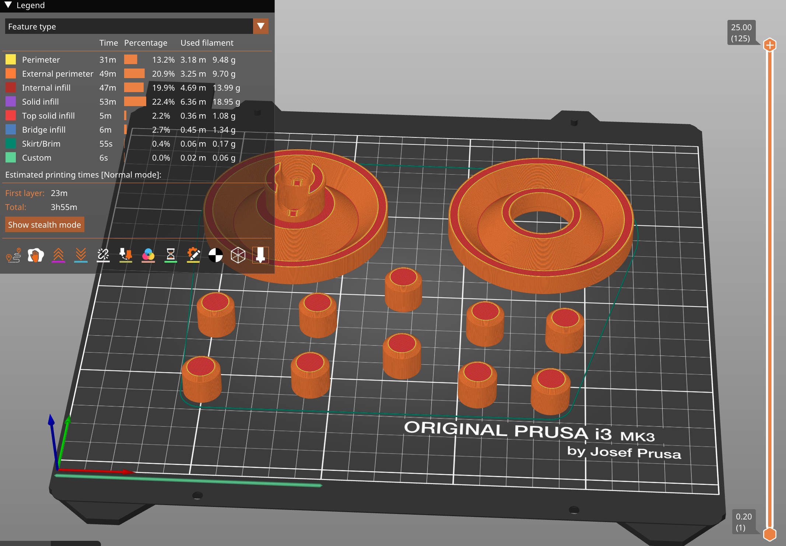
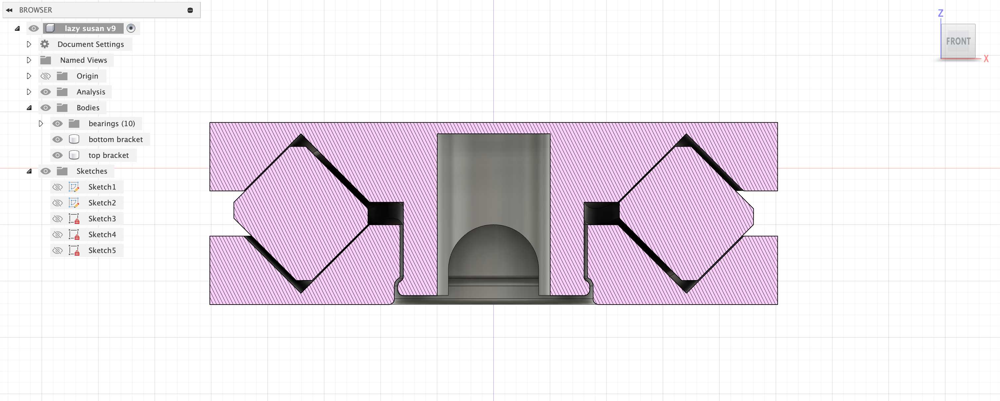

Week 5: 3D Design & Printing

See my final project page for all of the updates about that!Assignment: Scan something
This week, the first part of the assignment that I did was to scan something using photogrammetry! I initially had no idea how to do this until Wyatt sent a message to the class WhatsApp with a glowing recommendation for the app PolyCam in the form of a cool 3D model of Eli! Since I saw what it could do, I immediately tried it out myself. My first attempt was to model a globe because I thought that it could turn and that would make it easy, plus this globe had topography modeled on it, which I thought would make for a neat 3D scan. However, multiple failed attempts later, and I was running out of my free scans on this app. I didn't want to keep wasting my limited free resources on this globe that wasn't working, so I tabled it and decided to try something else. In retrospect, the app works a lot better when the camera is moving and not the object, so that is good to know for future usages. I don't think that it was an issue with the globe itself, but rather my usage of the app was poor. I then was thinking about what Wyatt said in class about how photogrammetry works best with organic forms and stuff that isn't super reflective. Being an EPS concentrator and an insufferable nerd, I immediately jumped to a specimen from my rock collection! I thought that this could make for a cool 3D scan, and if I chose a cool sample that I had, I thought that it would be interesting to see the crystal structure modeled in 3D space. To get the best possible first scan and minimize the usage of my limited free scans, I set up one of my favorite rocks - a 2.2 kg chunk of gorgeous green fluorite with huge, well defined crystals - onto a rug that had a pattern which I thought would be conducive to scanning, and I shined as much light as possible onto it. Honestly my first scanning the fluorite was almost perfect, and a little more attention to detail and slowing the process down to ensure that I got every side of the rock scanned in the second attempt produced an awesome scan! Play around with it below:Assignment: Model and 3D print something
With this assignment, I was eager to try to solve a problem in my life, make something easier, do something productive, or really just to make a functional print. I didn't want to just make some random sculpture that would sit on my desk and get thrown out at the end of the year when I need to pack all of my stuff up. With that in mind, I began trying to think of things that I would actually use. I thought about making some sort of desk organizer or phone charger holder, but I kinda feel like there are already a lot of those that are easily accessible. Plus, it would be a lot more of using the same tools in Fusion that I've already used, and I wanted to spice it up a bit. Then, continuing on the theme of rocks, I was thinking about maybe making a multi-pronged stand that could hold up irregularly shaped rocks, which I think could still be an interesting project, but I also realize that the vast majority of my rocks are already free standing perfectly. However, I frequently find myself handling my rocks to look at all sides of them, and I rotate all of them somewhat frequently so that all sides can be on display. This is kinda stressful because many of my rocks are fragile, so I want to minimize handling of them, but I still want both myself and people that come over to my room to be able to see the full glory of my rocks. My solution, put my rocks on rotating lazy Susans so they can just spin, and I can see all sides of it without having to pick it up! Now, all I have to do is make a lazy Susan... My original plan was to print out some sort of ball bearings that I could slot into a channel between a top piece and bottom piece like a very typical rotating thing. However, when I thought more about it, I realized that this probably is a bad idea because I know that 3D printers aren't very good at printing a sphere so it probably wouldn't end well. I then started thinking about other forms of bearings that I could use to facilitate the rotation. I first found this YouTube video where the guy uses cylindrical bearings inside of a guide template that helps to direct the cylinders around the track. This worked well for him, but I was skeptical of it for myself because I feel like it has some tight tolerances and potential for a less practiced person to screw it up when designing it. It also just felt wrong to me to have cylinders on a flat surface roll in a circle. I kept looking with special consideration for the fact that this was going to be 3D printed and not manufactured another way, and I came across this YouTube video where Robert very eloquently details a way of devising bearings specifically with 3D printing in mind. I don't want to steal his thunder as you should watch the video, but basically he uses two orthogonal cylinders on a V-shaped track to mimic the behavior and forces of a spherical ball bearing, but in a way that is more optimized for 3D printing. I found it to be really interesting the way that he talks about how many people just take the conventional way of making bearings and forcing a 3D printer to replicate that (poorly) instead of using the benefits of 3D printing to their advantage. He really emphasizes "playing to the strengths of the 3D printer rather than putting up with the limitations," which really caused me to shift how I thought about this whole project. He also provides a tutorial on how to build the bearing that he designs in TinkerCAD, which wasn't super useful to me since I wanted to do it in Fusion. However, the recommended video under that one was this YouTube video, which gave me the basic steps on how to create and troubleshoot this type of bearing. I wanted to build a full model of the lazy susan in Fusion instead of just making each of the components individually both because I think it will make for a better final product if I can see how they all fit together, but also because I wanted some more practice with this kind of stuff. I began by making the bearings themselves by rotating a rectangle instead of projecting a circle because I wanted them to be at an angle for this full model building, and the rectangle thing made more sense to me. Then making these into a circular pattern was super satisfying.







